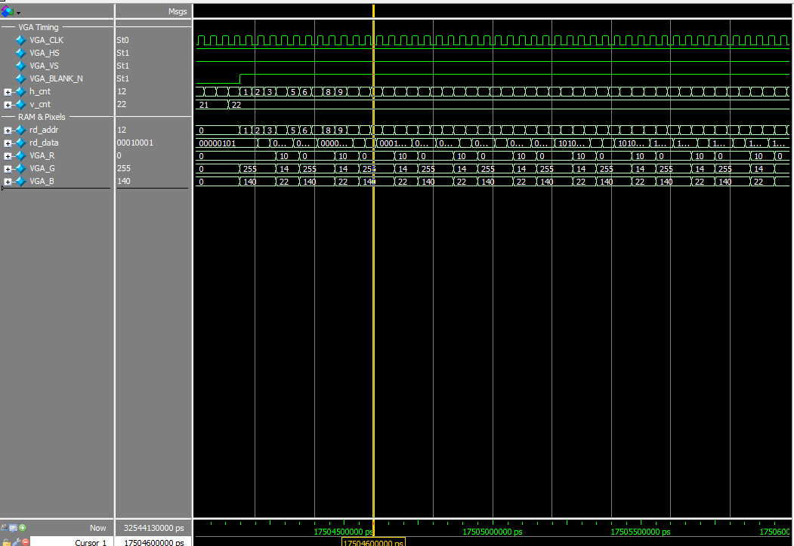

Implemented the VGA part of this project using direct scanline 640×480, 60 Hz VGA in vga_display.v. Added a vga_timing module running at 25 MHz (dividing CLOCK_50 by 2) for HSYNC, VSYNC, and blanking, and a vga_renderer module that reads directly from the 8K×8 RAM on the fly without needing a framebuffer. It draws the 8 (colour coded) waveforms, vertical edges, grid lines, trigger marker, status box, and leaves the bottom half of the screen open for Khalil's analog scope. I also wired the DE1-SoC VGA pins into top and added zoom and pan controls: SW[1:0] zooms up to 8x, SW[6:2] lets you pan manually across the capture in 128-sample steps, and SW[7] auto refreshes the captures at ~60 Hz in live mode (with state_dbg on LEDR[1:0] alongside busy and done). I verified a full 640×480 frame in ModelSim using sim/tb_vga.v with 0 errors.
| Signal | Direction | Description |
|---|---|---|
| CLOCK_50 | Input | 50 MHz clock, divided by 2 for the 25 MHz VGA pixel clock |
| KEY[0] | Input | Reset (active-low) |
| KEY[1] | Input | Take one snapshot capture (when SW[7] = 0) |
| SW[9] | Input | Source select (1 = built-in test_gen, 0 = GPIO_0[7:0] probes) |
| SW[8] | Input | Sample rate (0 = 50 MSPS, 1 = 10 MSPS) |
| SW[7] | Input | Capture mode (0 = snapshot on KEY[1], 1 = live, re-captures at ~60 Hz) |
| SW[6:2] | Input | Pan across the capture in 128-sample steps |
| SW[1:0] | Input | Zoom (00 = 1x, 01 = 2x, 10 = 4x, 11 = 8x) |
| GPIO_0[7:0] | Input | 8 digital probe inputs |
| GPIO_1[7:0] | Output | test_gen signals, for looping back to the probes |
| LEDR[1:0] | Output | Capture FSM state (state_dbg) |
| LEDR[8] / LEDR[9] | Output | Busy (capturing) / done |
| VGA_R/G/B, VGA_HS, VGA_VS, VGA_BLANK_N, VGA_SYNC_N, VGA_CLK | Output | 640 × 480 at 60 Hz: 8 colour-coded traces in the top half, bottom half left for the analog scope |
tb_vga runs the whole design with the built-in test signals: it takes one snapshot, waits until it's done, then watches one full frame. The screenshot is the start of line 22, which is the row where ch0's high level gets drawn. At 1x zoom rd_addr just follows h_cnt, one sample per pixel, so the colour flips between ch0's green (0, 255, 140) when ch0 is high and the background (10, 14, 22) when it's low. Over the whole frame the testbench also checks the sync pulse lengths, that nothing gets drawn while blanked, that there are exactly 640x480 visible pixels, and a few specific pixels (status box, divider, ch0 trace). It finished with 0 errors.
